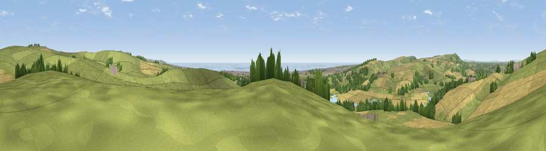

Viewpoint near Upper Beeding
#6262 in England · top 27% of its area beats it · near Upper BeedingThe view, rendered

A 360° render of this exact spot computed from the terrain model, tree cover and land cover — summer colours, afternoon light, calibrated against photographs of famous viewpoints. Real trees, hedges and buildings will differ in detail.
The panorama
Grey silhouette: terrain skyline in each direction (720 bearings, Earth curvature and refraction included). Dashed green: skyline with trees (+15 m) and buildings (+8 m) as obstacles. Blue strip: how far the ground is visible on each bearing.
Where the view opens
Wedge length = distance to the farthest visible ground on that bearing (vegetation-aware). Rings at 10, 25 and 50 km.
What fills the view
56% grassland · 26% cropland · 8% water · 6% woodland · 4% built-up
Angular shares of the visible panorama (visual magnitude), not map area. Landscape diversity 0.52 (0–1 Shannon).
Key numbers
More beautiful places nearby
The staircase of upgrades: each row has a higher view potential than everything closer. Driving times are estimates from straight-line distance, calibrated against real road routing — check an actual route before setting out.
| Place | Direction | Drive | Score |
|---|---|---|---|
| Thundersbarrow Hill | E · 2 km | ~5 min | 72.6 |
| Beeding Hill | N · 2 km | ~5 min | 78.8 |
| Truleigh Hill | NNE · 3 km | ~8 min | 81.4 |
| Edburton Hill | NE · 4 km | ~9 min | 82.3 |
| Viewpoint near Steyning | WNW · 7 km | ~14 min | 82.6 |
| Chanctonbury Ring | WNW · 8 km | ~17 min | 87.0 |
| Firle Beacon | E · 27 km | ~44 min | 88.9 |
| Viewpoint near Niton | WSW · 78 km | ~102 min | 89.2 |
50.85771, -0.28045 · source: screening · position refined by local search. Computed location — check access rights before visiting.